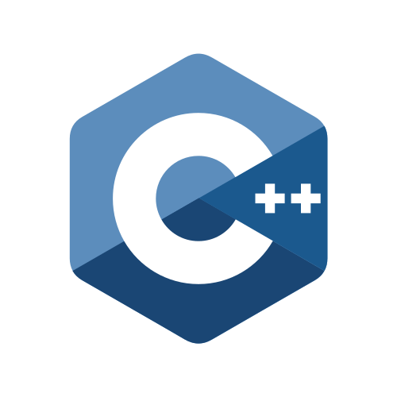

My Skills
Programming Languages
-

-

-

-

A Master’s student in AI and Business Analytics at the University of South Florida, with over two years of experience as a Technology Analyst at Deloitte. Experienced in software development, cloud computing, and data-driven solutions, with strong expertise in machine learning, big data, advanced analytics, and software engineering. Proficient in tools and technologies such as Angular, Spring Boot, Java, MySQL, AWS, React, Machine Learning, and AI. Alumnus of NIT Warangal.
Developed a full static website for finding rightful apartments for students in USF where I created a dashboard to compare prices with other apartments using ChartJs (Guage chart), included Map feature, and CRUD functionality for this responsive website, hosted on azure and USF myweb server.
WebsiteCreated an angular application for shift roaster where employees can see, request, swap the shifts and admin can add different people, projects, update. Created custom calendar dashboard, dialog boxes, filter, implemented authorization, authentication and validation forms.
Source CodeDeveloped an interactive Tableau Public dashboard showcasing unemployment trends from 1990 to 2023 across eight counties in the Tampa Bay region. Pre-processed unemployment and population data using Python, then created visualizations in Tableau to provide key insights into regional employment patterns.
Dashboard
